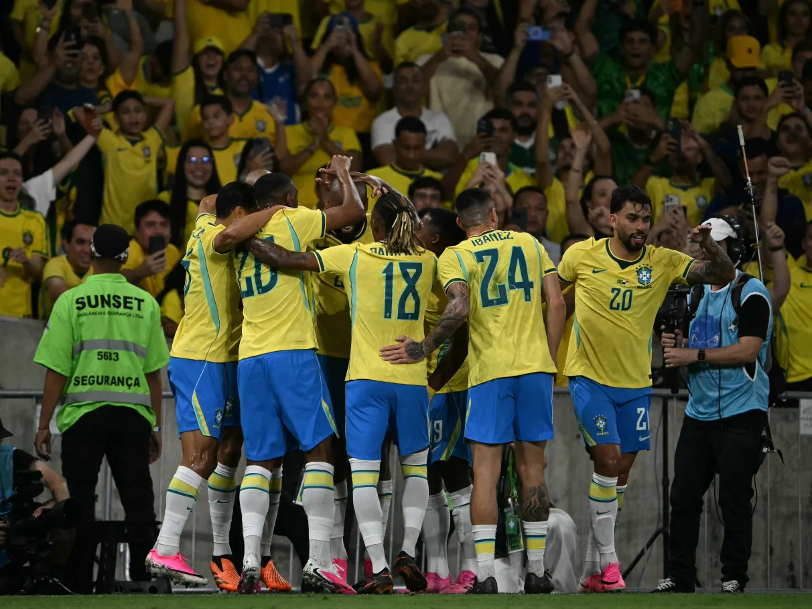

<html lang="pt-br"></html>
<head>
    <link rel="stylesheet" href="aula.css">
    <title>Trabalho Copa Programação</title>
</head>
<body>
    <h1 id="titulo">Brasil</h1>
    <h2 id="subtitulo">Rumo ao Hexa!</h2>
    
    <p id="paragrafo">Esta Copa de 2026 (sediada por EUA, Canadá e México) marca exatamente os 24 anos do Pentacampeonato (2002). Coincidentemente, o jejum anterior mais longo do Brasil também foi de exatamente 24 anos — o período entre o Tri em 1970 e o Tetra em 1994.</p>
    <h2>Jogadores convocados:</h2>
    <h3>Goleiros</h3>
    <ul>
        <li>Alisson (Liverpool)</li>
        <li>Ederson (Fenerbahçe)</li>
        <li>Weverton (Grêmio)</li>
    </ul>
    <h3>Defensores</h3>
    <ul>
        <li>Alex Sandro (Flamengo)</li>
        <li>Bremer (Juventus)</li>
        <li>Danilo (Flamengo)</li>
        <li>Douglas Santos (Zenit)</li>
        <li>Gabriel Magalhães (Arsenal)</li>
        <li>Ibañez (Al-Ahli)</li>
         <li>Léo Pereira (Flamengo)</li>
        <li>Marquinhos (PSG)</li>
        <li>Wesley (Roma)</li>
    </ul>
    <h3>Meio-campistas</h3>
    <ul>
        <li>Bruno Guimarães (Newcastle)</li>
        <li>Casemiro (Manchester United)</li>
        <li>Danilo Santos (Botafogo)</li>
        <li>Fabinho (Al-Ittihad)</li>
    </ul>
    <h3>Atacantes</h3>
    <ul>
        <li>Endrick (Lyon)</li>
        <li>Gabriel Martinelli (Arsenal)</li>
        <li>Igor Thiago (Brentford)</li>
        <li>Matheus Cunha (Atlético de Madrid)</li>
        <li>Neymar (PSG)</li>
        <li>Raphinha (Barcelona)</li>
        <li>Luiz Henrique (Zenit)</li>
        <li>Rayan (Bournemouth)</li>
        <li>Vinicius Jr. (Real Madrid)</li>
    </ul>
    <h2 id="subtitulo">Tabela das eliminatorias!</h2>
    <p id="paragrafo">As Eliminatórias para a Copa do Mundo de 2026 já entraram para a história como as mais disputadas e grandiosas de todos os tempos. Com a expansão do torneio para 48 seleções, a corrida por uma vaga no maior palco do futebol mundial ganhou uma intensidade inédita em todos os continentes.</p>
    <a href="aula2.html">Clique aqui para acessar a tabela das eliminatorias</a>
    <br>
    <h2 id="subtitulo">Qual seu jogador favorito?</h2>
   <p id="paragrafo">Quem é o seu craque favorito na Seleção Brasileira atual? Aquele que não pode faltar de jeito nenhum no time titular?

Queremos saber a sua opinião! Participe da nossa pesquisa logo abaixo e vote no seu jogador preferido.</p>
     <a href="aula3.html">Clique aqui para participar da pesquisa</a>
</body>